Libera spazio sul computer, con calma.Free up disk space, calmly.
Twenties Cleaning mostra cosa occupa spazio: cartelle, giochi, doppioni e archivi già estratti. Sposta nel Cestino solo quello che scegli tu. Gratuito, open source e senza invio di dati.Twenties Cleaning shows what is taking up space: folders, games, duplicates and archives you have already extracted. It moves only what you choose to the Recycle Bin. Free, open source, and it sends no data anywhere.
Per Windows 10/11 e macOS. Interfaccia in italiano.For Windows 10/11 and macOS. The app interface is in Italian.


Cosa faWhat it does
Quattro cose, fatte con attenzione.Four things, done carefully.
Trova lo spazio persoFinds the lost space
Cartelle più pesanti, file grandi, giochi, doppioni identici e archivi ZIP/RAR/7z già estratti.Heaviest folders, large files, games, identical duplicates, and ZIP/RAR/7z archives that are already extracted.
Prudente di naturaCareful by design
Elimina solo dopo la tua conferma e solo verso il Cestino. Dei doppioni resta sempre almeno una copia.It deletes only after you confirm, and only to the Recycle Bin. At least one copy of every duplicate is always kept.
Resta sul tuo computerStays on your computer
Nessuna telemetria, nessuna pubblicità, nessun servizio esterno. L'analisi non lascia mai il tuo computer.No telemetry, no ads, no external services. The analysis never leaves your computer.
Gratuito e apertoFree and open
Nessun pagamento, nessun abbonamento. Il codice è pubblico e puoi controllarlo.No payment, no subscription. The code is public and you can inspect it.
Come si usaHow to use it
Pochi minuti dal download al primo risultato.A few minutes from download to your first result.
- Scarica e apri. Compare la finestra dell'app, che gira solo sul tuo computer. Se la finestra non è disponibile, si apre il browser.Download and open. The app window opens and runs only on your computer. If the window is not available, the browser opens instead.
- Crea un account locale. Email e password restano su questo computer e servono solo a proteggere l'app.Create a local account. Email and password stay on this computer and only protect the app.
- Scegli i dischi e avvia l'analisi. Puoi fermarla quando vuoi.Pick your drives and start the analysis. You can stop it at any time.
- Controlla e sposta nel Cestino. Niente viene cancellato per sempre finché non svuoti tu il Cestino.Review and move to the Recycle Bin. Nothing is deleted for good until you empty the Bin yourself.
DownloadDownload
Versione 1.0.0. I file sono pubblicati su GitHub insieme a un elenco di controllo (SHA256SUMS) per verificare che non siano stati alterati.Version 1.0.0. Files are published on GitHub together with a checksum list (SHA256SUMS) so you can verify they were not altered.
Windows
Windows 10 o 11, file .exe unico, senza installazione.Windows 10 or 11, single .exe file, no installation.
Scarica per WindowsDownload for WindowsmacOS · Apple Silicon
Mac con chip M1 o successivi.Macs with an M1 chip or later.
Scarica .dmgDownload .dmgSe un link non funziona, trovi tutti i file nella pagina delle versioni.If a link does not work, you can find all the files on the releases page.
Domande frequentiFAQ
Windows mostra “Windows ha protetto il PC”. È normale?Windows shows “Windows protected your PC”. Is that normal?
Sì. Questo programma è gratuito e non ha una firma digitale a pagamento, quindi Windows SmartScreen avvisa per i programmi poco diffusi. Se hai scaricato il file da questa pagina o dalla pagina delle versioni su GitHub: clicca Ulteriori informazioni, poi Esegui comunque. Per esserne certo puoi confrontare il codice SHA256 del file con quello in SHA256SUMS.
Yes. This program is free and has no paid digital signature, so Windows SmartScreen warns about programs that few people have downloaded. If you got the file from this page or from the GitHub releases page, click More info, then Run anyway. To be sure, compare the file's SHA256 hash with the one in SHA256SUMS.
Su Mac non si apre (“sviluppatore non verificato” o “danneggiata”)On Mac it will not open (“unverified developer” or “damaged”)
Per lo stesso motivo (nessuna firma a pagamento) macOS blocca la prima apertura. Trascina l'app in Applicazioni, provala ad aprire, poi vai in Impostazioni di Sistema › Privacy e sicurezza, scorri in basso e clicca Apri comunque. Se compare “è danneggiata”, apri il Terminale ed esegui: xattr -dr com.apple.quarantine "/Applications/Twenties Cleaning.app"
For the same reason (no paid signature) macOS blocks the first launch. Drag the app to Applications and try to open it, then go to System Settings › Privacy & Security, scroll down and click Open Anyway. If it says the app is damaged, open Terminal and run: xattr -dr com.apple.quarantine "/Applications/Twenties Cleaning.app"
Perché a volte si apre il browser?Why does the browser sometimes open?
L'app ha una finestra propria e risponde solo dal tuo computer (indirizzo 127.0.0.1): nessun altro dispositivo può raggiungerla. L'accesso con Google si apre nel browser, perché Google non consente il login dentro la finestra; quando hai finito, la finestra risulta già connessa. Se la finestra non è disponibile (su Windows manca WebView2), un messaggio lo dice e si usa il browser. Per chiudere usa la X della finestra o il pulsante Chiudi app.
The app has its own window and only answers from your computer (address 127.0.0.1): no other device can reach it. Google sign-in opens in the browser, because Google blocks login inside the app window; when you finish, the window shows you as signed in. If the window is not available (WebView2 is missing on Windows), a message says so and the browser is used. To quit, close the window or use Chiudi app.
È sicuro eliminare quello che propone?Is it safe to delete what it suggests?
L'app classifica cartelle e file in base all'importanza, ma è una stima e la decisione è tua. Guarda sempre cosa selezioni. Tutto va nel Cestino e si può ripristinare finché non lo svuoti. Se un Cestino non è disponibile, l'app non elimina nulla. Per i dati importanti, tieni un backup.
The app sorts folders and files by importance, but that is an estimate and the decision is yours. Always check what you select. Everything goes to the Recycle Bin and can be restored until you empty it. If a Recycle Bin is not available, the app deletes nothing. Keep a backup of important data.
Ho dimenticato la password. Come faccio?I forgot my password. What can I do?
L'app non invia email, quindi la password non si recupera. Non perdi nulla di importante: l'account serve solo ad accedere all'app. Chiudi l'app, elimina la cartella dei dati (vedi sotto) e creane uno nuovo.
The app does not send emails, so a password cannot be recovered. You lose nothing important: the account only gives access to the app. Quit the app, delete the data folder (see below) and create a new account.
Dove sono i miei dati e come li cancello?Where is my data and how do I delete it?
Nel programma, pulsante Elimina account: cancella subito account e sessioni. In alternativa chiudi l'app ed elimina la cartella TwentiesCleaning: su Windows in %APPDATA%, su Mac in ~/Library/Application Support. I file del tuo computer non vengono toccati.
In the app, use the Elimina account button: it immediately deletes your account and sessions. Alternatively, quit the app and delete the TwentiesCleaning folder: on Windows in %APPDATA%, on Mac in ~/Library/Application Support. Your computer's files are not touched.
Su Mac non vede alcune cartelleOn Mac it cannot see some folders
Concedi l'Accesso completo al disco a Twenties Cleaning in Impostazioni di Sistema › Privacy e sicurezza, poi riapri l'app. Al primo spostamento nel Cestino macOS chiede di consentire il controllo di Finder: accetta.
Grant Full Disk Access to Twenties Cleaning in System Settings › Privacy & Security, then reopen the app. The first time you move something to the Bin, macOS asks to allow control of Finder: accept.